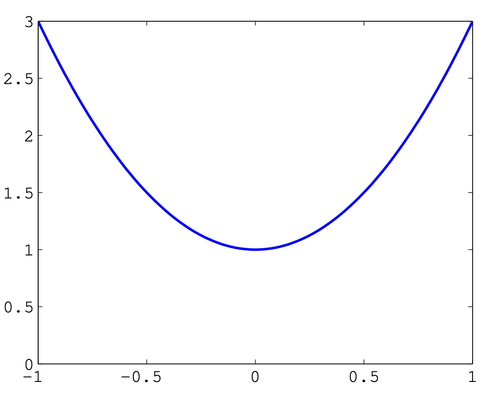
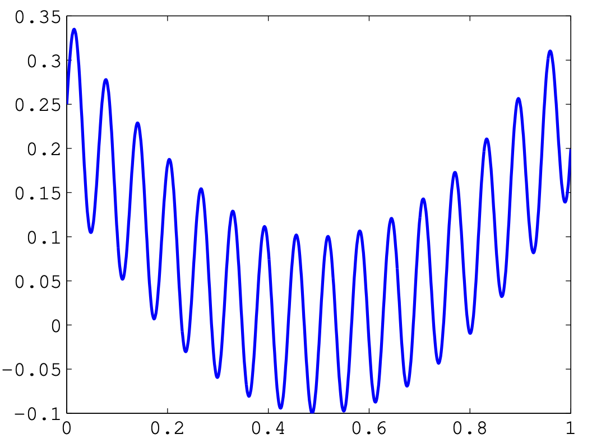
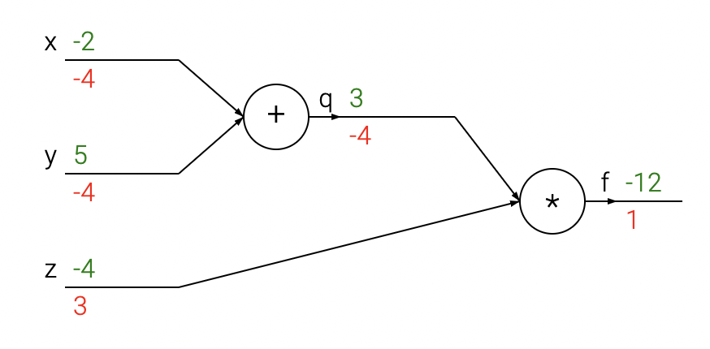
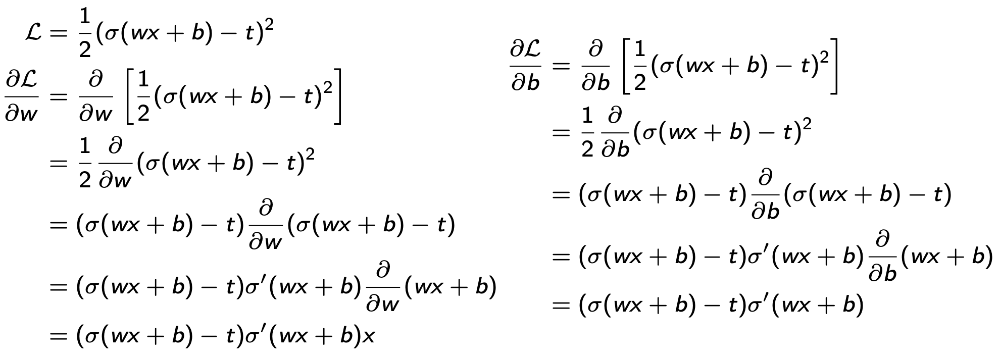
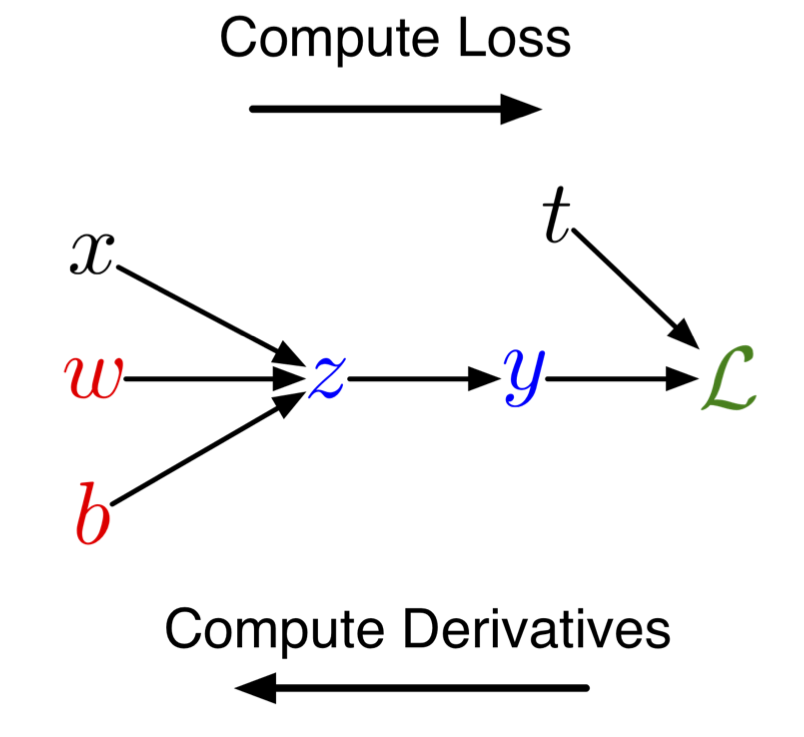
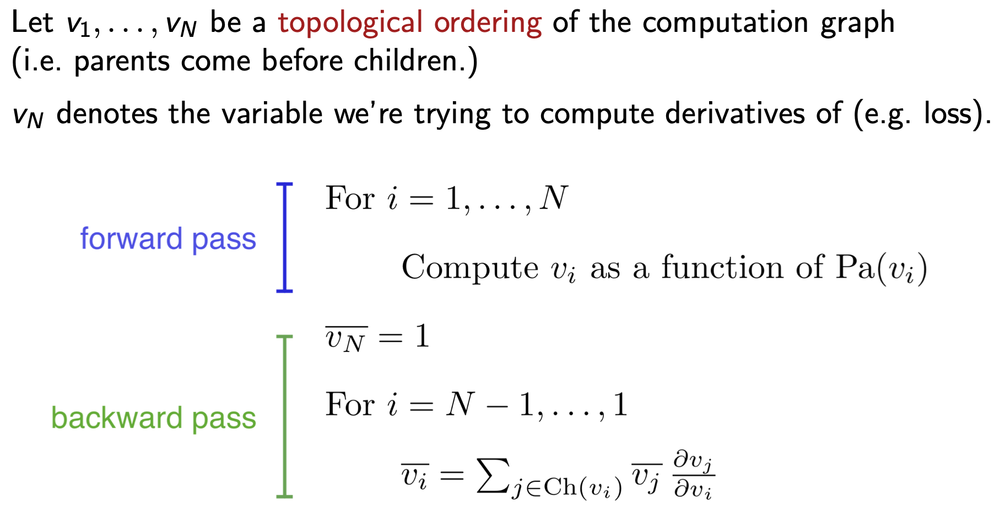

flowchart TD
A[Backpropagation]<-->B[Reverse-mode automatic differentiation]<-->C[Discrete adjoint-state method]flowchart TD A[Backpropagation]<-->B[Reverse-mode automatic differentiation]<-->C[Discrete adjoint-state method]
Automatic Differentiation
2024-01-22
Automatic differentiation for scientific machine learning:
Differentiable programming with autograd and PyTorch and Zygote.jl in Flux.jl.
Gradients, adjoints, backpropagation and inverse problems.
Neural networks for scientific machine learning.
Physics-informed neural networks.
The use of automatic differentiation in scientific machine learning.
The challenges of applying automatic differentiation to scientific applications.
Differential programming is a technique for automatically computing the derivatives of functions.
This can be done using a variety of techniques, including:
Symbolic differentiation: This involves using symbolic mathematics to represent the function and its derivatives. This can be a powerful technique, but it can be difficult to use for complex functions.
Numerical differentiation: This involves using numerical methods to approximate the derivatives of the function. This is a simpler technique than symbolic differentiation, but it is less accurate.
Automatic differentiation: This is a technique that combines symbolic and numerical differentiation to automatically compute the derivatives of functions. This is the most powerful technique for differential programming, and it is the most commonly used technique in scientific machine learning.
The mathematical theory of differential programming is based on the concept of gradients.
The gradient of a function can be calculated using the gradient descent algorithm. The gradient descent algorithm works by starting at a point and then moving in the direction of the gradient until it reaches a minimum or maximum.
In ML, we use stochastic gradientoptimization methods
Differential programming can be used to solve a variety of problems in scientific machine learning, including:
Calculating the gradients of loss functions for machine learning models—this is important for training machine learning models.
Solving differential equations—this can be used to model the behavior of physical systems.
Performing optimization—this can be used to find the optimal solution to a problem.
Solving inverse and data assimilation problems—this is none other than a special case of optimization.
OPTIMIZATION
 
Optimization routines typically use local information about a function to iteratively approach a local minimum.
In this (rare) case, where we have a convex function, we easily find a global minimum.
But in general, global optimization can be very difficult
We usually get stuck in local minima!
Things get MUCH harder in higher spatial dimensions…
DIFFERENTIAL PROGRAMMING
There are 3 ways to compute derivatives of functions:
Symbolic differentiation.
Numerical differentiation.
Automatic differentiation.
See Notebooks for Intro Pytorch and Differential Programming.
Computes exact, analytical derivatives, in the form of a mathematical expression.
There is no approximation error.
Operates recursively by applying simple rules to symbols.
Based on the sympy package of Python.
Definition 1 If \(f\) is a differentiable function, then \[f'(x)=\lim_{h\rightarrow0}\frac{f(x+h)-f(x)}{h}\]
Using Taylor expansions, and the definition of the derivative, we can obtain finite-difference, numerical approximationsto the derivatives of \(f,\) such as \[f'(x)=\frac{f(x+h)-f(x)}{h}+\mathcal{O}(h),\] \[f'(x)=\frac{f(x+h)-f(x-h)}{2h}+\mathcal{O}(h^{2})\]
conceptually simple and very easy to code
compute gradients of \(f\colon\mathbb{R}^{m}\rightarrow\mathbb{R},\) requires at least \(\mathcal{O}(m)\) function evaluations
big numerical errors due to truncation and roundoff.
AUTOMATIC DIFFERENTIATION
Automatic differentiation is an umbrella term for a variety of techniques for efficiently computing accurate derivatives of more or less general programs.
It is employed by all major neural network frameworks, where a single reverse-mode AD backpass (also known as “backpropagation”) can compute a full gradient.
Numerical differentiation would either require many forward passes or symbolic differentiation that is simply untenable due to expression explosion.
The survey paper (Baydin et al. 2018) provides an excellent review of all the methods and tools available.
Many algorithms in machine learning, computer vision, physical simulation, and other fields require the calculation of gradients and other derivatives.
Manual derivation of gradients can be both time-consuming and error-prone.
Automatic differentiation comprises a set of techniques to calculate the derivative of a numerical computation expressed as a computer code.
These techniques of AD, commonly used for data assimilation in atmospheric sciences and optimal design in computational fluid dynamics, have more recently also been adopted by machine learning researchers.
The backpropagation algorithm, used for optimally computing the weights of a neural network, is just a special case of general AD.
AD can be found in all the major software libraries for ML/DL, such as TensorFlow, PyTorch, JaX, and Julia’s Flux.jl/Zygote.jl.
Practitioners across many fields have built a wide set of automatic differentiation tools, using different programming languages, computational primitives, and intermediate compiler representations.
Nevertheless, the availability of such tools should not be neglected, since the potential gain from their use is very large.
Moreover, the fact that they are already built-in to a large number of ML methods, makes their use quite straightforward.
AD can be readily and extensively used and is thus applicable to many industrial and practical Digital Twin contexts (Asch 2022).
However Digital Twins that require large-scale ML remain challenging.
While substantial efforts are made within the ML communities of PyTorch/Tensorflow, these approaches struggle for large-scale problems that need to
Worthwhile to explore Julia’s more integrated approach to HPC Differential Programming (Innes et al. 2019) and SciML (Rackauckas and Nie 2017).
Recent progress in machine learning (ML) technology has been spectacular.
At the heart of these advances is the ability to obtain high-quality solutions to non-convex optimization problems for functions with billions—or even hundreds of billions—of parameters.
Incredible opportunity for progress in classical applied mathematics problems.
In particular, the increased proficiency for systematically handling large, non-convex optimization scenarios may help solve some classical problems that have long been a challenge.
We now have the chance to make substantial headway on questions that have not yet been formulated or studied because we lacked the tools to solve them.
To be clear, we do not wish to oversell the state of the art, however:
Algorithms that identify the global optimum for non-convex optimization problems do not yet exist.
The ML community has instead developed efficient, open source software tools that find candidate solutions.
They have created benchmarks to measure solution quality.
They have cultivated a culture of competition against these benchmarks.
Backprop is a special case of Algorithmic Differentiation (AD).
Autograd is a particular AD package that us supported w/i Python (as part of Pytorch).
Most exercises of this course use PyTorch’s AD.
Having said that we strongly encourage students to do the exercises in Julia using its extensive AD capabilities (see JuliaDiff), integration in the Julia language, and use of abstractions that allow for
mixing of hand-derived (adjoint-state) gradients and AD via ChainRules.jl
a single AD interface irrespective of the AD backend through the use of AbstractDifferentiation.jl.
Important
AD is NOT finite differences, nor symbolic differentiation. Finite differences are too expensive (one forward pass for each discrete point). They induce huge numerical errors (truncation/approximation and roundoff) and are very unstable in the presence of noise.
Note
AD is both efficient—linear in the cost of computing the value—and numerically stable.
Note
The goal of AD is not a formula, but a procedure for computing derivatives.
New opportunities that exist because of the widespread, open-source deployment of effective software tools for automatic differentiation.
While the mathematical framework for automatic differentiation was established long ago—dating back at least to the evolution of adjoint-based optimization in optimal control (Asch, Bocquet, and Nodet 2016; Asch 2022)—ML researchers have recently designed efficient software frameworks that natively run on hardware accelerators (GPUs).
These frameworks have served as a core technology for the ML revolution over the last decade and inspired high-quality software libraries such as
JAX,
PyTorch and TensorFlow
Julia’s ML with Flux.jl and AD with Zygote.jl and abstractions with ChainRules.jl and AbstractDifferentiation.jl
The technology’s key feature is: the computational cost of computing derivatives of a target loss function is independent of the number of parameters;
“Gradient descent can write code better than you, I’m sorry.”
“Yes, you should understand backprop.”
“I’ve been using PyTorch a few months now and I’ve never felt better. I have more energy. My skin is clearer. My eye sight has improved.”
Note
Tools such as PyTorch and TensorFlow may not scale to 3D problems and are challenging to integrate with physics-based simulations and gradients (via adjoint state).
BACKPROPAGATION
We want to solve a (nonlinear, non-convex) optimization problem, either
for a dynamic system, \[\frac{\mathrm{d}\mathbf{x}}{\mathrm{d}t}=f(\mathbf{x};\mathbf{\theta}),\] where \(\mathbf{x}\in\mathbb{R}^{n}\) and \(\mathbf{\theta}\in\mathbb{R}^{p}\) with \(n,p\gg1.\)
or for a machine learning model \[\mathbf{y}=f(\mathbf{x};\mathbf{w}),\] where \(\mathbf{x}\in\mathbb{R}^{n}\) and \(\mathbf{w}\in\mathbb{R}^{p}\) with \(n,p\gg1.\)
To find the minimum/optimum, we want to minimize an appropriate cost/loss function \[J(\mathbf{x},\mathbf{\theta}),\quad\mathcal{L}(\mathbf{w},\mathbf{\theta})\]
usually someerror norm, and then (usually) compute its average
The best/fastest way to solve this optimization problem, is to use gradients and gradient-based methods.
Definition 2 Backpropagation is an algorithm for computing gradients.
Backpropagation is an instance of reverse-mode automatic differentiation
very broadly applicable to machine learning, data assimilation and inverse problems in general
it is “just” a clever and efficient use of the Chain Rule for derivatives
We can prove mathematically the following equivalences:
flowchart TD
A[Backpropagation]<-->B[Reverse-mode automatic differentiation]<-->C[Discrete adjoint-state method]flowchart TD A[Backpropagation]<-->B[Reverse-mode automatic differentiation]<-->C[Discrete adjoint-state method]
Note
Recall: the adjoint-state method is the theoretical basis for Data Assimilation, as well as many other inverse problems—see Basic Course, Lecture on Adjoint Methods).
We want to compute the cost/loss function gradient, which is usually the average over the training samples of the loss gradient, \[\nabla_{w}\mathcal{L}=\frac{\partial\mathcal{L}}{\partial w},\quad\nabla_{\theta}\mathcal{L}=\frac{\partial\mathcal{L}}{\partial\theta},\] or, in general \[\nabla_{z}\mathcal{L}=\frac{\partial\mathcal{L}}{\partial z},\] where \(z=w\) or \(z=\theta,\) etc.
Recall: if \(f(x)\) and \(x(t)\) are univariate (differentiable) functions, then \[\frac{\mathrm{d}}{\mathrm{d}t}f(x(t))=\frac{\mathrm{d}f}{\mathrm{d}x}\frac{\mathrm{d}x}{\mathrm{d}t}\]
and this can be easily generalized to the multivariate case, such as \[\frac{\mathrm{d}}{\mathrm{d}t}f(x(t),y(t))=\frac{\mathrm{d}f}{\mathrm{d}x}\frac{\mathrm{d}x}{\mathrm{d}t}+\frac{\mathrm{d}f}{\mathrm{d}y}\frac{\mathrm{d}y}{\mathrm{d}t}\]
Example 1 Consider \[f(x,y,z)=(x+y)z\]
Decompose \(f\) into simple differentiable elements \[q(x,y)=x+y,\] then \[f=qz\]
Note
Each element has an analytical (exact/known) derivative—eg. sums, products, sines, cosines, min, max, exp, log, etc.
Compute the gradient of \(f\) with respect to its three variables, using the chain rule
we begin with \[\frac{\partial f}{\partial q}=z,\quad\frac{\partial f}{\partial z}=q\] and \[\frac{\partial q}{\partial x}=1,\quad\frac{\partial q}{\partial y}=1\]
then the chain rule gives the terms of the gradient, \[\begin{aligned} \frac{\partial f}{\partial x} & =\frac{\partial f}{\partial q}\frac{\partial q}{\partial x}=z\cdot1\\ \frac{\partial f}{\partial y} & =\frac{\partial f}{\partial q}\frac{\partial q}{\partial y}=z\cdot1\\ \frac{\partial f}{\partial z} & =q \end{aligned}\]
# set some inputs
x = -2; y = 5; z = -4
# perform the forward pass
q = x + y # q becomes 3
f = q * z # f becomes -12
# perform the backward pass (backpropagation)
# in reverse order:
# first backprop through f = q * z
dfdz = q # df/dz = q, so gradient on z becomes 3
dfdq = z # df/dq = z, so gradient on q becomes -4
dqdx = 1.0
dqdy = 1.0
# now backprop through q = x + y
# dfdx = dfdq * dqdx # The * here is the chain rule!
dfdy = dfdq * dqdyWe obtain the gradient in the variables [``dfdx, dfdy, dfdz``] that give us the sensitivity of the function f to the variables x, y and z.
It’s all done with graphs... DAGs, in fact
The above computation can be visualized with a circuit diagram:

the forward pass, computes values from inputs to outputs
the backward pass then performs backpropagation, starting at the end and recursively applying the chain rule to compute the gradients all the way to the inputs of the circuit.
Forward mode is used for
solving nonlinear equations
sensitivity analysis
uncertainty propagation/quantification \[f(x+\Delta x)\approx f(x)+f'(x)\Delta x\]
Reverse mode is used for
machine/deep learning
optimization
For a univariate, logistic least-squares problem, we have:
linear model/function of \(x\): \(z=wx+b\)
nonlinear activation: \(y=\sigma(x)\)
quadratic loss: \(\mathcal{L}=(1/2)(y-t)^{2},\) where \(t\) is the target/observed value
Objective: find the values of the parameters/weights, \(w\) and \(b,\) that minimize the loss \(\mathcal{L}\)
Calculus approach:

It’s a mess... too many computations, too complex to program!
Structured approach: \[\begin{aligned} & \mathrm{compute\ loss} & & \mathrm{compute\ derivatives}\\ & \mathrm{{\color{blue}forwards}} & & \mathrm{{\color{red}backwards}}\\ z & =wx+b & \frac{\partial\mathcal{L}}{\partial y} & =y-t\\ y & =\sigma(z) & \frac{\partial\mathcal{L}}{\partial z} & =\frac{\partial\mathcal{L}}{\partial y}\frac{\partial y}{\partial z}=\frac{\partial\mathcal{L}}{\partial y}\sigma'(z)\\ \mathcal{L} & =\frac{1}{2}(y-t)^{2} & \frac{\partial\mathcal{L}}{\partial w} & =\frac{\partial\mathcal{L}}{\partial z}\frac{\partial z}{\partial w}=\frac{\partial\mathcal{L}}{\partial z}x\\ & & \frac{\partial\mathcal{L}}{\partial b} & =\frac{\partial\mathcal{L}}{\partial z}\frac{\partial z}{\partial b}=\frac{\partial\mathcal{L}}{\partial z}\cdot1 \end{aligned}\]
can easily be written as a computational graphwith
nodes = inputs and computed quantities
edges = nodes computed directly as functions of other nodes

Lossis computed in the forward pass
Gradient is computed in the backward pass
the derivatives of \(y\) and \(z\) are exact/known
the derivatives of \(\mathcal{L}\) are computed, starting from the end
the gradients wrt to the parameters are readily obtained by backpropagation using the chain rule!

where \(\bar{v}_{i}\) denotes the derivatives of the loss function with respect to \(v_{i},\) \[\frac{\partial\mathcal{L}}{\partial v_{i}}\]
Computational cost of backprop: approximately two forward passes, and hence linear in the number of unknowns
Backprop is used to train the overwhelming majority of neural nets today.
Optimization algorithms, in addition to gradient descent (e.g. second-order methods) use backprop to compute the gradients.
Backprop can thus be used in SciML, and in particular for Digital Twins (direct and inverse problems), wherever derivatives and/or gradients need to be computed.
AUTOGRAD
Autograd can automatically differentiate native Python and Numpy code.
It can handle a large subset of Python’s features, including loops, ifs, recursion and closures.
It can even take derivatives of derivatives of derivatives, etc.
It supports reverse-mode differentiation (a.k.a. backpropagation), which means it can efficiently take gradients of scalar-valued functions with respect to array-valued arguments, as well as forward-mode differentiation (to compute sensitivities), and the two can be composed arbitrarily.
The main intended application of Autograd is gradient-based optimization.
After a function is evaluated, Autograd has a graph specifying all operations that were performed on the inputs with respect to which we want to differentiate.
Reverse mode differentiation
Given a function made up of several nested function calls, there are several ways to compute its derivative.
For example, given \[L(x)=F(G(H(x))),\] the chain rule says that its gradient is \[\mathrm{d}L/\mathrm{d}x=\mathrm{d}F/\mathrm{d}G*\mathrm{d}G/\mathrm{d}H*\mathrm{d}H/\mathrm{d}x.\]
If we evaluate this product from right-to-left: \[(\mathrm{d}F/\mathrm{d}G*(\mathrm{d}G/\mathrm{d}H*\mathrm{d}H/\mathrm{d}x)),\] the same order as the computations themselves were performed, this is called forward-mode differentiation.
If we evaluate this product from left-to-right: \[((\mathrm{d}F/\mathrm{d}G*\mathrm{d}G/\mathrm{d}H)*\mathrm{d}H/\mathrm{d}x),\] the reverse order as the computations themselves were performed, this is called reverse-mode differentiation.
Compared to finite differences or forward-mode, reverse-mode differentiation is by far the more practical method for differentiating functions that take in a (very)large vectorand output a single number.
In the machine learning community, reverse-mode differentiation is known as ‘backpropagation’, since the gradients propagate backwards through the function (as seen above).
It’s particularly nice since you don’t need to instantiate the intermediate Jacobian matrices explicitly, and instead only rely on applying a sequence of matrix-free vector-Jacobian productfunctions (VJPs).
Because Autograd supports higher derivatives as well, Hessian-vector products (a form of second-derivative) are also available and efficient to compute.
Important
Autograd is now being superseded by JAX.
While extremely easy to use and featured, PyTorch & Jax are walled gardens
In response to the prompt “Can you list in Markdown table form pros and cons of PyTorch and Julia AD systems” ChatGTP4.0 generated the following adapted table
| Feature | PyTorch | Julia AD |
|---|---|---|
| Language | Python-based, widely used in ML community | Julia, known for high performance and mathematical syntax |
| Performance | Fast, but can be limited by Python’s speed | Generally faster, benefits from Julia’s performance |
| Ease of Use | User-friendly, extensive documentation and community support | Steeper learning curve, but elegant for mathematical operations |
| Feature | PyTorch | Julia AD |
|---|---|---|
| Dynamic Computation Graph | Yes, allows flexibility | Yes, with support for advanced features |
| Ecosystem | Extensive, with many libraries and tools | Growing, with packages for scientific computing |
| Community Support | Large community, well-established in industry and academia | Smaller but growing community, strong in scientific computing |
| Integration | Easy integration with Python libraries and tools | Good integration w/i Julia ecosystem |
| Debugging | Good debugging tools, but can be tricky due to dynamic nature | Good, with benefits from Julia’s compiler & type system |
| Parallel & GPU | Excellent support | Excellent, potentially faster due to Julia’s design |
| Maturity | Mature, widely adopted | Less but rapidly evolving |
Important
This table highlights key aspects but may not cover all nuances. Both systems are continuously evolving, so it’s always good to check the latest developments and community feedback when making a choice.
For those of you interested in Julia checkout the lecture Forward- & Reverse-Mode AD by Adrian Hill